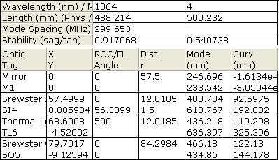

The Inventory lists all of the optics within the current system, as well as the relevant mode properties at those locations in the system.

An Inventory list can only be created for the top-level system in each file. Out-coupled systems are not included in the Inventory.
To change the width of any of the optic property columns, drag the line divider in the optic property header. Note that because the table is scaled to fit the width of the window, the adjacent column widths are also scaled.
The Inventory has no further user-settable properties in the Property Manager.